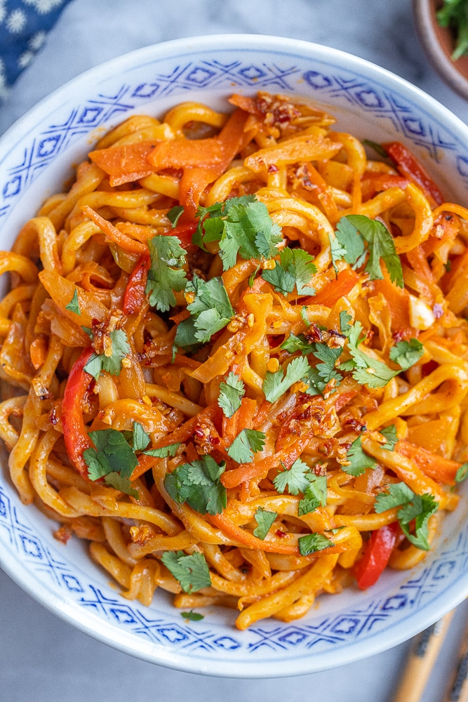

Red Curry Noodles

Description
Dry stir-fried noodles with a red curry paste seasoning
Ingredients
- Tofu - 200g
- Instant Noodles - 250g
- Red Curry Paste - 1 tbsp
- Shimeiji Mushrooms -150 g
- Cabbage - 100g
- Onion - 0.5 medium onion
- Garlic - 2 Cloves
- Vegan Fish Sauce - 3 tbsp
- Vegan Oyster Sauce - 1 tbsp
Steps
- Slice the tofu, cabbage, and onion. Mince garlic.
- Heat wok over high heat. When hot, add oil, tofu, and mushrooms. Stir-fry for about 2-3 minutes
until tofu starts getting crispy. Meanwhile, soak instant noodles in hot water for about 1 minute, then drain the water.
- Push the tofu and mushrooms aside. Add garlic and onion and stir for 30 seconds. Add cabbage and stir for 30 seconds.
Add the red curry paste and mix everything well.
- Add noodles and stir with chopsticks. Add the vegan fish sauce and oyster suace and keep stirring for about 2 minutes. Serve.